Engage
Product plan and walkthrough
A meeting engagement layer that runs beside any video meeting. The host pastes a link in the meeting chat, and attendees take small, optional actions on a second screen.
- Summary
- Walkthrough in 9 steps
- Who sees what
- Where Engage lives on the laptop
- Keeping it from pulling people away
- Games and attention checks
- Lessons from Read AI
- Roadmap and Phase 1 status
- Metrics, pilots and risks
- Decisions and next steps
The problem, the idea, and where we are
The problem
In a 1 to 2 hour corporate meeting, most people speak for about five minutes and sit idle the rest. Hosts and senior people want everyone engaged, but attendees do not want it to feel like micromanagement.
The idea
Engage is a second screen, not a video platform. Attendees join from one link with no account and take small actions: reactions, questions, polls, light games. The host sees how the room is doing as a group, not who is idle.
What is built today
- Host console: invite link, code and chat message; live room pulse and engagement chart with dip detection; polls, pulse checks, recall quizzes and word clouds; question queue; reaction counts; game windows, bingo and predictions; Focus moment; quiet mode; post-meeting summary. 26 automated tests pass.
- Attendee view: no-login join with a disclosure of what the host can see; reactions; questions with votes and an anonymous option; answering prompts; bingo and predictions with private points; private notes; personal recap.
What comes next
- Run three real pilot meetings and measure participation and distraction.
- Add a floating mini window with a collapsed state and a presenting mode, so Engage never competes with the person sharing.
- Add a recall check, agenda segments, and a host-only coach summary.
- Persistence and host access from any browser, then a calendar-created meeting.
Six principles
| Principle | What it means in the product |
|---|---|
| The meeting always wins | One click pauses every prompt and game (Focus moment). Prompts expire and never repeat. |
| Measure only what Engage can see | Engagement means actions inside Engage. No speaker or idle guessing. |
| Transparent by default | A plain-language screen at join lists what the host can and cannot see. |
| Aggregate first, never ranked | Group results only. No leaderboards. Poll answers are never tied to names. |
| Invitations, not accusations | Suggestions go to the host. Nudges go to everyone, never to chosen people. |
| Zero friction | No account, no install, under 10 seconds to join. |
How a meeting runs, in 9 steps
Every screenshot below is from the working prototype. Attendee screens sit in a half-width window beside a placeholder video call, which is how a laptop user would use it today.
1The host starts a meeting
The host enters a title and, optionally, how many people to expect. There is no account for attendees, and the host needs none for this prototype.
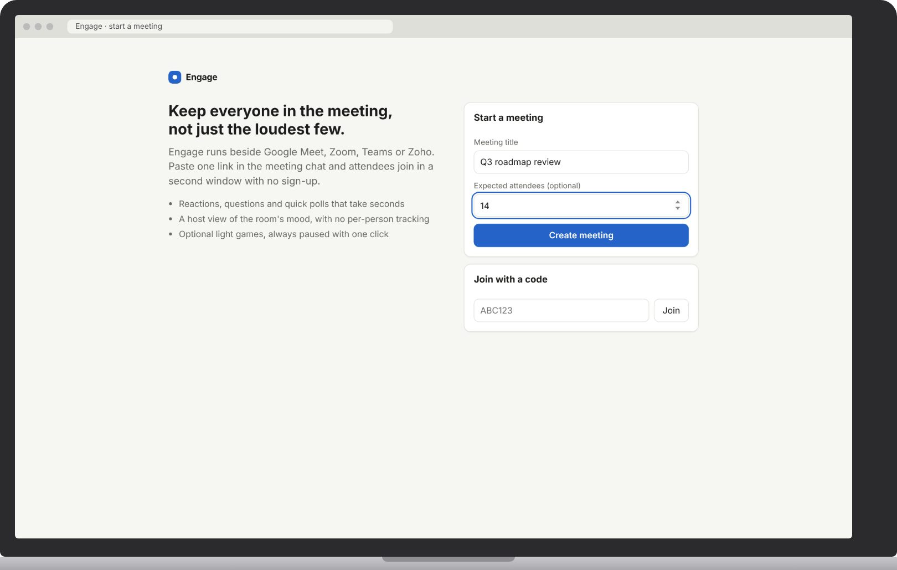
2The host shares the link
Engage gives a link, a six-character code and a ready-to-paste chat message. Three tiles show the room at a glance: engagement, how many took part, and how many are connected.
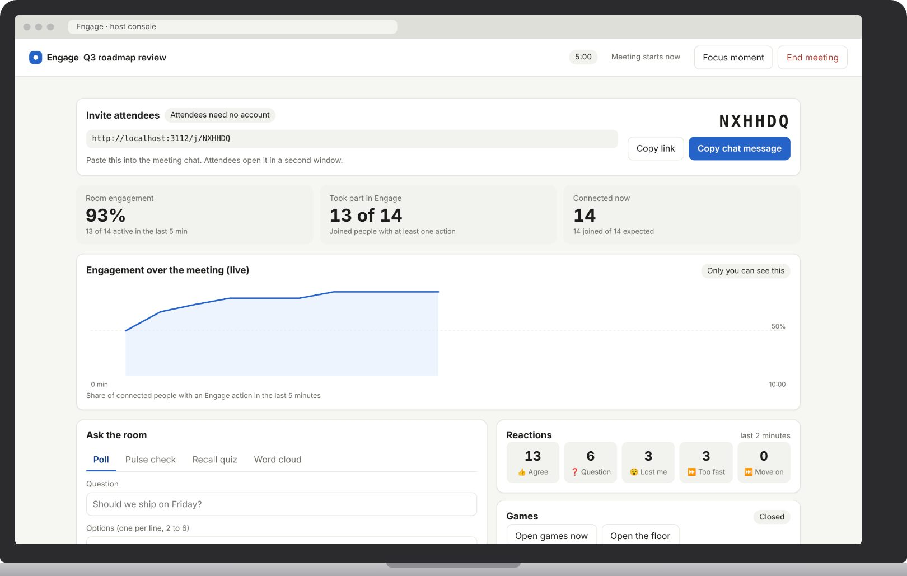
3An attendee joins and sees what the host can see
Joining takes a first name or the Anonymous option. Before joining, the attendee reads what the host can and cannot see. Points, bingo cards, predictions and notes stay private to each attendee.
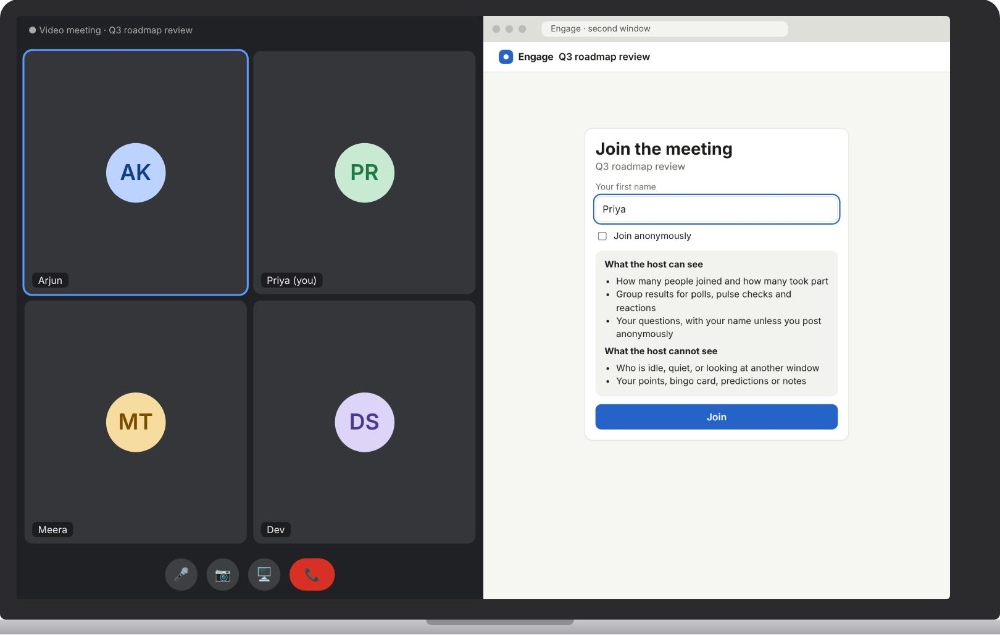
4The attendee takes part without leaving the call
A prompt from the host appears in the second window. This one is a pulse check with a countdown. Below it are quick reactions and a question box with votes. There is no sound and no notification.
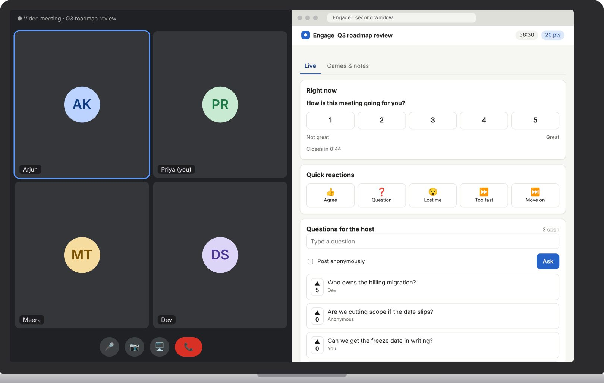
5The host spots a dip and acts
Engagement is the share of connected people with an action in the last five minutes. After a quiet stretch it drops, the chart marks the dip, and Engage suggests three responses. Nothing goes to attendees until the host chooses.
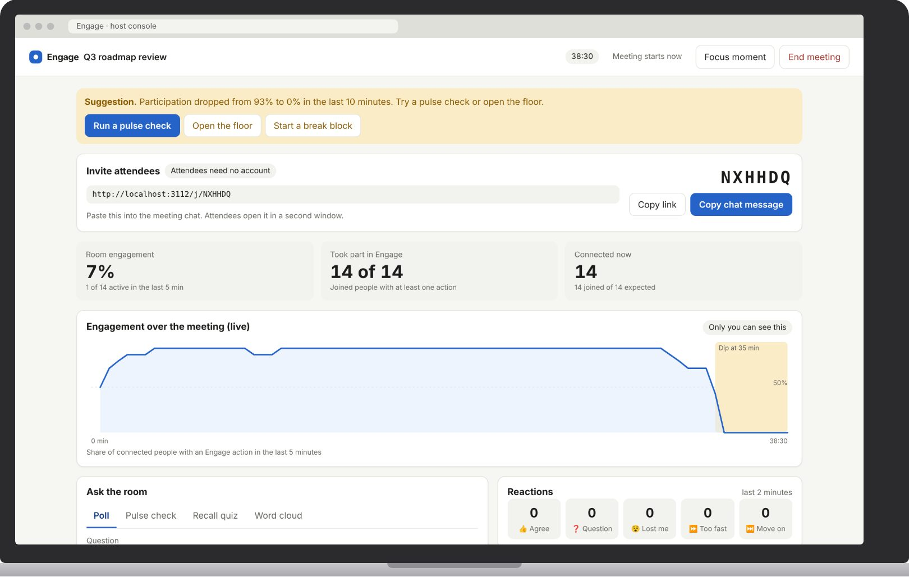
6The host asks the room
The host ran the suggested pulse check. Results build live for the host, while attendees see group results only after the host closes it. Prompts close on their own after a set time.
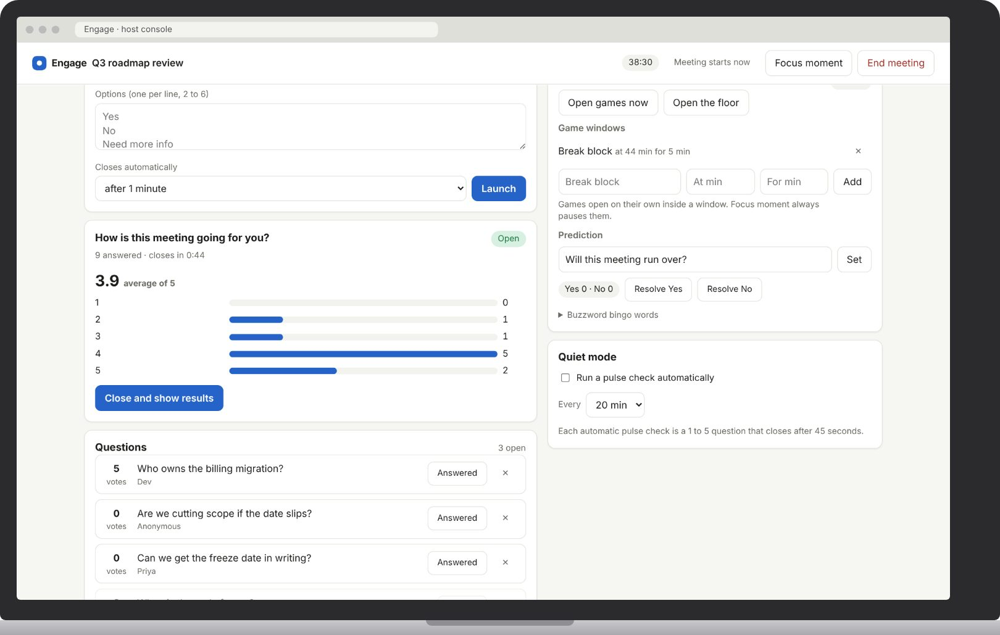
7Games open only in host-set windows
At 44 minutes a five-minute break block opened. Bingo is self-marked, so players have to listen. The prediction is one tap, and the score is private. Notes stay on the attendee's device.
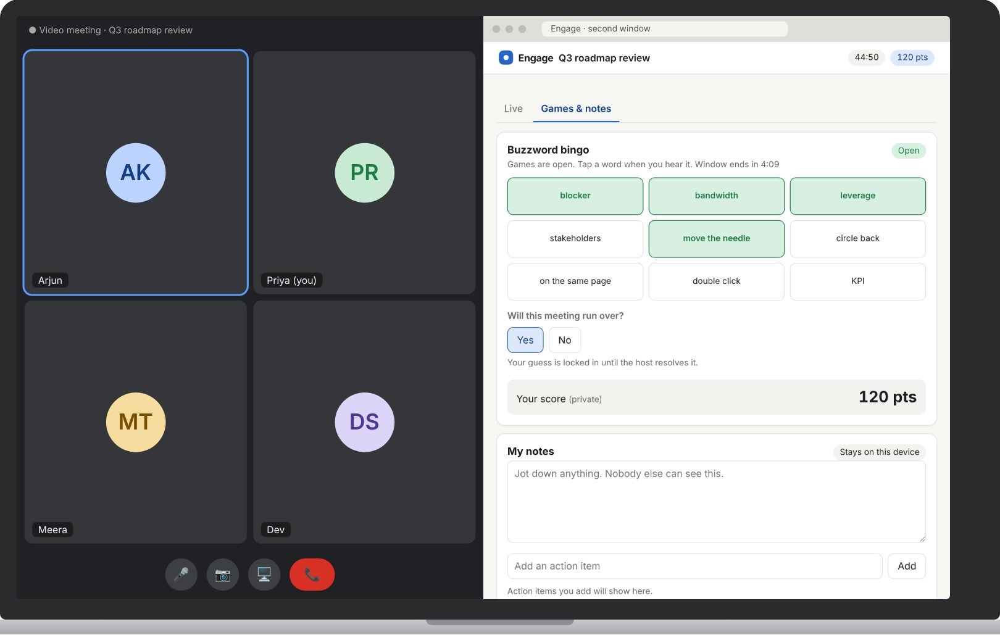
8The host can pause everything with one click
Focus moment pauses all prompts and games for everyone. Attendees see a plain banner explaining why. This is the main protection for important moments.
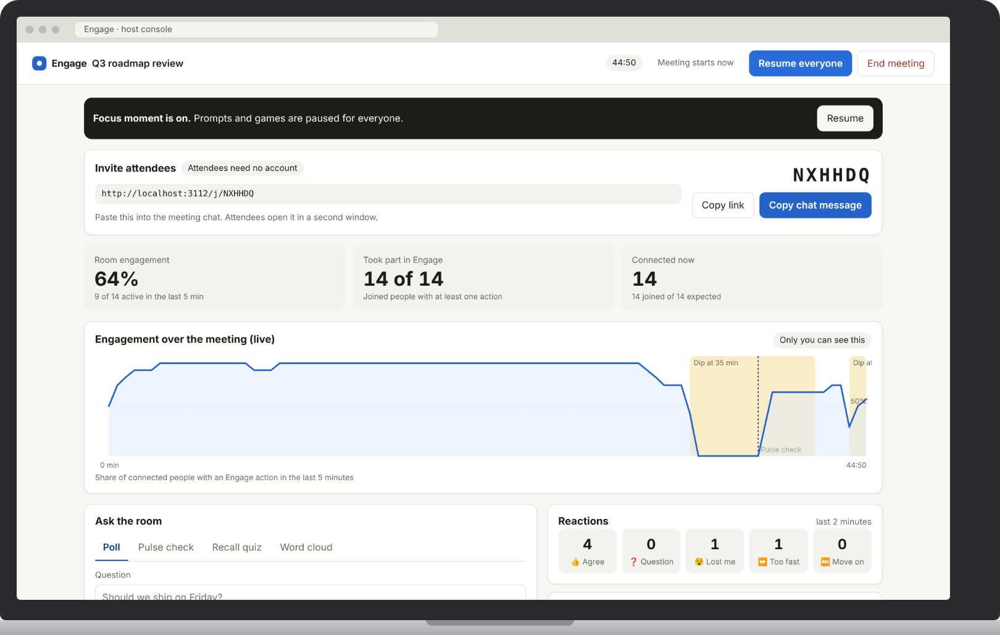
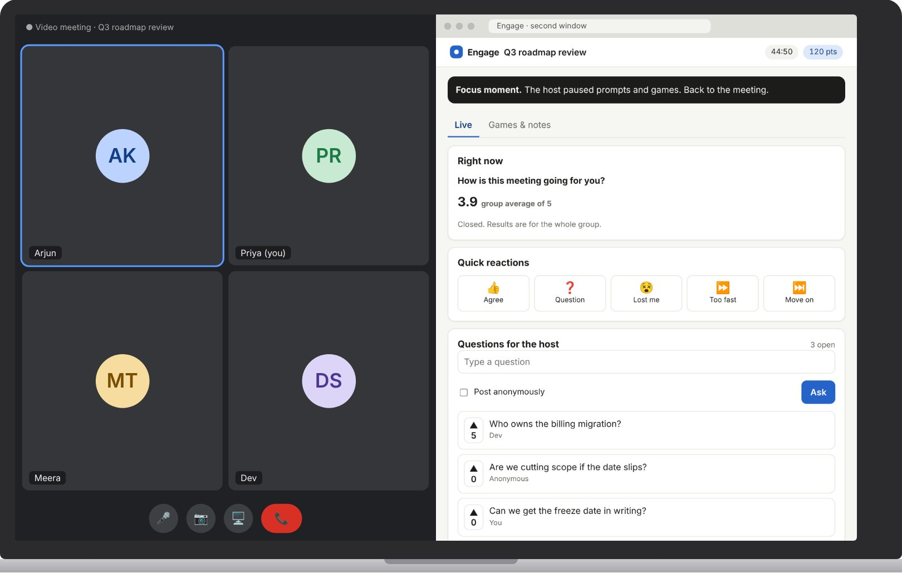
9The meeting ends with a summary and a personal recap
The host gets duration, participation, average engagement, how evenly people took part, the results of every prompt, top questions and reactions, and can copy or download it. Each attendee gets their own recap with action items and their questions.
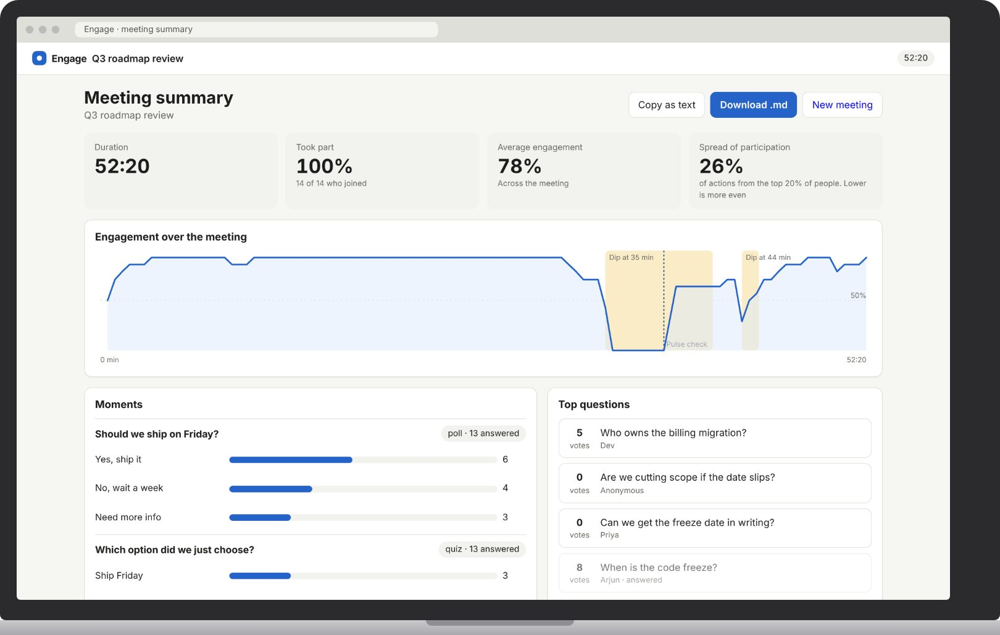
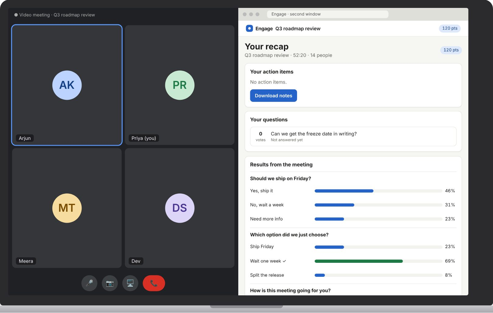
Privacy rules built into the product
| Information | Host | Other attendees |
|---|---|---|
| How many joined and took part | Yes, as counts | No |
| Poll, pulse and word-cloud answers | Group results only | Group results after close |
| Reactions | Group counts, last 2 minutes | No |
| Questions | Text and votes, with name unless anonymous | Text and votes, with name unless anonymous |
| Who is idle, quiet or on another window | Never measured | Never measured |
| Points, bingo card, predictions | No (prediction totals only) | No |
| Notes and action items | No, kept on the attendee's device | No |
Three layouts, from simplest to best
The second window can cost attention. These are the options for making it cheaper.
A. Second window beside the meeting Built
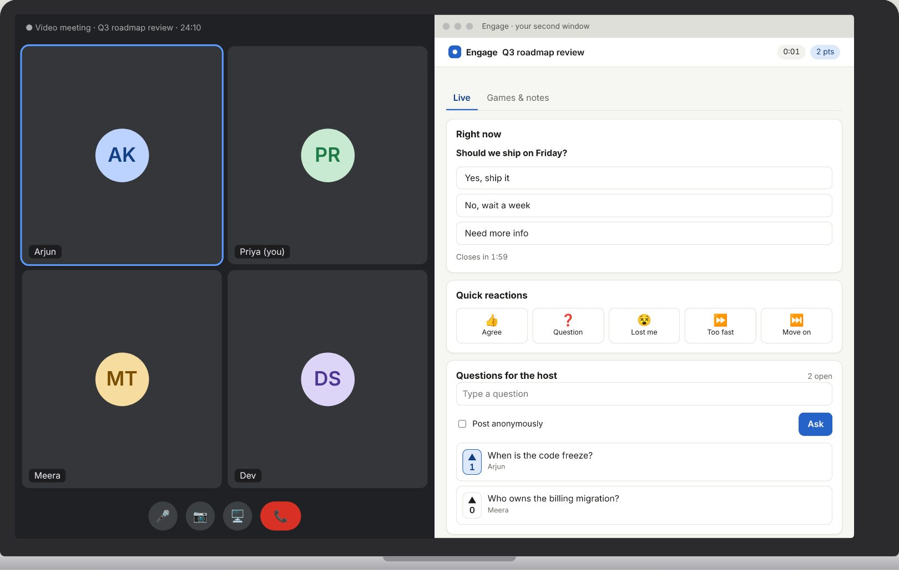
Pros: works with every meeting tool, no install. Cons: needs screen space and the attendee must look away from the call.
B. Floating mini window Next
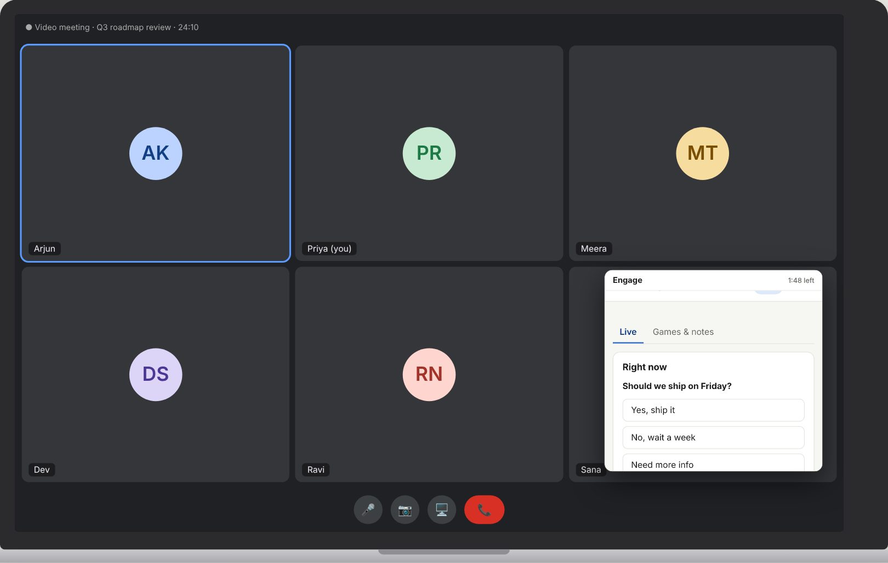
Pros: no window switching, and a glance is enough. Cons: Chrome and Edge only, and it can appear on a shared full screen. Safari and Firefox fall back to layout A.
C. Side panel inside the meeting app Phase 2 concept
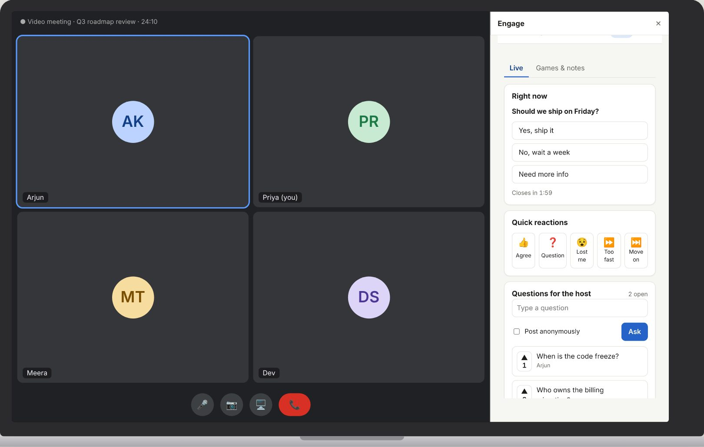
Pros: best experience, and the platform can tell Engage who is speaking and who is presenting. Cons: built and approved separately for each meeting tool.
Keeping Engage from pulling people away
"Pull" means the system drawing attention on its own. The host choosing to launch a prompt is fine. Engage popping something up unprompted is not.
Already true today
- No sound, no browser notifications, no pop-ups over other windows.
- Prompts close on their own after a time the host sets, and never repeat.
- Quiet mode (automatic pulse checks) is off by default and is the host's choice.
- One click pauses every prompt and game (Focus moment).
Planned
- A new prompt shows as a quiet badge, and the attendee opens it when they choose.
- A minimum gap between prompts, which the host can override.
- The floating mini window below, with a presenting mode.
The floating mini window has three states Planned, not built
| State | What it looks like | When |
|---|---|---|
| Pill (default) | A small badge in a corner (about 190 by 46) with a dot when something is waiting and an I'm presenting button | Always on join. Prompts do not expand it on their own |
| Card | The prompt, reactions and questions | Only when the attendee clicks the pill |
| Presenting | The window is closed. Nothing shows or queues | One click on "I'm presenting". It stays hidden until turned off |
How distraction is measured
Engage does not watch whether someone looked away. Distraction is measured by asking attendees after a pilot meeting: "Did Engage pull you out of the meeting?"
Minimal, and useful to the host
The aim is to keep people engaged without pulling them away, and to check that the message landed.
| Option | What it is | Distraction | Verdict |
|---|---|---|---|
| Recall check | One question about the last few minutes, a 20-second timer, and a "Missed that" option. The host sees the group result only | Medium | Core, to build |
| Prediction | One tap, such as "Will this run over?", resolved later | Very low | Core, built |
| Topic bingo | Squares from agenda terms, self-marked | Low | Optional |
| Closing takeaway | One minute at the end to pick or write the main takeaway | Low | Optional |
| Buzzword bingo | Jargon squares like "synergy" | Low | Built keep as a casual template only |
| Team trivia | Quick rounds between teams | High | Break blocks only |
| Leaderboards | Public rankings | Medium | No |
Buzzword bingo is built today. The plan recommends not making it the default because jargon jokes can read as mocking the speaker or leadership.
What to borrow and what to avoid
Read AI sends a bot into meetings on Zoom, Google Meet and Teams, then produces a report. Per third-party reviews, it infers engagement and sentiment from facial expressions, body language, talk time and voice, and folds them into a single score. It also offers private speaker coaching and, in some tools, a live in-meeting app. My sources are Read's own pages and reviews, with no independent check of accuracy.
| Read AI | Engage | |
|---|---|---|
| Method | Watches and listens, then scores people | Invites people to take small actions |
| Consent | A bot joins the call | Attendees choose to take part |
| Output | Analytics after the meeting | An effect during the meeting |
To borrow
| Idea | Engage version | Needs |
|---|---|---|
| Calendar-driven setup | Create the meeting from a calendar event and add the link to the invite. No host setup | Calendar integration |
| Highlights at key moments | Tie the engagement chart to agenda items, such as "dipped during Budget" | Agenda segments |
| Private coaching | A host-only coach summary after each meeting | Nothing new |
| Benchmarks | Compare to your own last five meetings, never to other people | Saved history |
| Follow-up | Send action items and unanswered questions to email or Slack | Integrations |
| Live in-meeting gauge | Confirms the in-meeting app (layout C) as the long-term home | Platform apps |
To avoid
- Face and voice analysis. It creates the feeling of being watched, and one review notes the EU and UK score is computed without video.
- Per-person scores shown to others, which turn engagement into a ranking.
- One opaque score with good and poor bands. Engage shows how each number is computed.
- A bot that records and transcribes by default.
Sources: Laxis review, Read AI: AI meeting coach, Unite.AI review, Read AI: Webex app, Read AI: Meeting reports.
Phases and Phase 1 status
Prototype, host interviews, manual test meetings
Core is built. Pilot meetings next
Persistence, privacy review, load test
Meet, Zoom, Teams apps. Speaker data
SSO, admin, history, trends
Timelines assume a team of about three and are estimates. The prototype was built ahead of Phase 0, so the first real test is the pilot.
Phase 1 status
| Milestone | Scope | Status |
|---|---|---|
| M1 Core loop | Link and join, reactions, questions, host room pulse | Built |
| M2 Moments and control | Polls, pulse checks, quizzes, word clouds, Focus moment, dip suggestions, summaries | Built |
| M3 Games and personal value | Bingo, predictions, game windows, private points, notes | Built |
| M4 Polish and quiet mode | Quiet mode built. Templates, mini window, recall check not yet | Partly built |
| Pilot hardening | Persistence, host access from any browser, retention, accessibility pass, load test to 200 | Next |
Not built yet
Floating mini window and presenting mode, recall check with "Missed that", agenda segments, host coach summary, calendar-created meetings, persistence, SSO and admin controls, speaker detection.
How we will know it works
| Metric | Definition | Starting target |
|---|---|---|
| Join rate | Joined divided by invited | Above 60% |
| Participation rate | Share of joined people with at least one action | Above 70% |
| Participation spread | Share of actions from the top 20% of people | Falling over a meeting |
| Repeat intent | "I would use this again" | Above 70% of attendees, all hosts |
| Distraction | "Engage pulled me out of the meeting" | Below 10% yes |
| Host effort | Host taps per meeting after setup | Under 10 |
| Reliability | Meetings with no host-visible failure | 95% or better |
These targets are starting guesses. Set real ones after the first pilot meeting.
Pilot plan
- Run three real meetings with colleagues, then ask attendees and hosts the survey questions above.
- Decision rule: if participation is high and distraction is low, Phase 1 works. If participation is low, fix the interactions before adding features.
Main risks
| Risk | Impact | Mitigation |
|---|---|---|
| Attendees see Engage as monitoring and ignore it | High | Disclosure at join, group results only, anonymous option, no rankings |
| Hosts forget to launch moments | High | Quiet mode, templates, agenda-driven suggestions, calendar setup |
| The second screen distracts or does not fit | High | Low-pull rules, mini window with presenting mode, measure distraction in pilots |
| Realtime breaks in a large meeting | High | Load test to 200 before wider pilots, graceful reconnect |
| Enterprise security review blocks pilots | Medium | Minimal data, no recording, short retention, simple privacy summary |
| Games feel childish | Medium | Optional, restrained, host can disable, recall check as the core |
What is decided and what is open
Decided
- Product name: Engage
- Laptop-first, second window beside the meeting
- Engage measures only actions inside Engage
- Group results for the host, no rankings
- Floating mini window with a collapsed state is the next layout
- Stack for the prototype: Node, WebSocket, plain HTML and JavaScript
Open
- Final game set (recommended: recall check and prediction as core)
- Whether the recall check may expand the mini window by itself
- Whether the presenting button plus Focus is enough until layout C
- Which meeting tool the first pilot company uses
- Who the first pilot hosts are, and the real team size
- Retention period and enterprise requirements
Recommended next steps
| # | Step | Why |
|---|---|---|
| 1 | Find three pilot hosts and run three real meetings | The only real test of participation and distraction |
| 2 | Build the mini window with collapsed and presenting states, and the recall check | Directly addresses the distraction risk |
| 3 | Add persistence and host access from any browser | Needed before wider pilots |
| 4 | Add agenda segments and the host coach summary | Turns the chart into advice, with no integration needed |
| 5 | Add calendar-created meetings, then build an in-meeting app for the pilot company's tool | Removes host effort and the second window |
Companion documents in this repository: docs/phase1-spec.md and docs/product-plan.md.